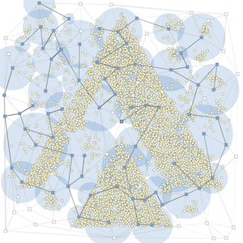

ALGO ARTISプログラミングコンテスト2023 (AtCoder Heuristic Contest 020)¶

問題概要¶
- 放送局がN(=100)局、放送局間をつなぐ通信ケーブルがM(=100〜300)本、家がK(=2000〜5000)件ある
- 各放送局は0〜5000の出力強度を設定可能で、通信ケーブルはONかOFFを選べる
- 放送は、原点の放送局からONの通信ケーブルで連結な放送局から発信可能で、各放送局の出力強度の範囲にある家が受信可能
- すべての家に放送を届けられるよう、できるだけ通信ケーブルを使う数を少なく、かつ、できるだけ出力強度を少なく設定せよ
時間¶
- 4 時間
個人的メモ¶
- いろいろ考える要素があって、バグらせずにきちんとコンテスト時間内にコードを書ききるのが難しい、と感じた問題
- ざっくり「強度の組み合わせをいろいろ探索するために部分破壊再構築する」のが強かった模様
問題固有の性質¶
- 施設配置、集合被覆、シュタイナー木の複合問題
- 家の位置は正規分布的に生成されるので、ある程度はカタマリができている
- スコアが「強度の2乗」になっているので、「大小」な組み合わせより「中中」な組み合わせの方が良い可能性がある
- 基本は、すべての家をカバーする必要がある
- カバーできないと 10^6 点以下だが、カバーできていると 10^6 点以上になる
- 300M点以上なら平均全点カバーできている
- コストが0なら3.3G点ぐらいだけど、実際どのぐらいが理論値になるかは見積もるのが難しい？
方針¶
- 使う放送局を決めると、最小コストは最小シュタイナー木の問題になる
- 大雑把には、以下の方針が強かった模様
- 強度を状態にして探索＋使う放送局をつなぐ
- 使う放送局を探索＋強度を乱択greedy(家を適当な順番に最小コストでカバー)
- 強度の組み合わせの探索の方が重要度が高かったかも
- また、ポイントとしては、「時間内でバグなく実装しきれる」必要があるので、実装時間も考慮して方針選択するほうが良かったかも
最小シュタイナー木¶
- 無向グラフにおいて、ターミナル(頂点の部分集合)をすべて連結にする木、のこと
- AHC018でも出ていた
- 厳密解は求めるのが難しいため、基本的には近似的なもので代用
厳密解¶
- 厳密解を爆速で求めるwataさんのライブラリ
- ただ、(今回は)近似解でも十分だった模様
primヒューリスティック¶
- 最小全域木を求めるprim法のような感じで、一番近いターミナル点を追加していく方法
- 厳密解にならない事例
- ダイクストラ法などでつなぎたい頂点までの最短距離を求めて、一番近いやつを繋いでいく、も基本同じと思う
- Nが小さいので前計算で全点間最短距離を求めておいたり、など
MST＋連結判定¶
- 「使う放送局」集合を考えて、使う放送局だけでMSTしてルート放送局とすべて連結ならvalid、とすると強度の探索と一緒に探索できる
- 強度1の放送局と考えても良い
- https://twitter.com/yunix91201367/status/1668288708041388039
- MSTはprim法かkruskal法で求めればよい
MSTから不要葉ノードを削る¶
- 自分はAHC018でも、kruskal法してから不要リーフノードを削る方法を取っていた
- ただ、今回はルート放送局は必ず含むようにしないといけなかったりする必要があった
- ルート放送局がリーフになって非連結でスコアが0点近くになってしまった
強度の探索¶
- 強度を増減させるのに、適当に値を変化させるだけだと、無駄な探索が多い
- 「カバーできている家の集合が変わらない」という意味のない近傍移動が発生してしまう
- ぎりぎり家をカバーするような強度のところだけ探索したほうが効率的
- 探索空間がなめらかではないので、部分破壊再構築系の近傍が良さそうで、強度を少しずつ調整系は、多点スタートや何回か実行か、高速化で相当回数探索できないと厳しいかも
- 基本、すべての家がカバーできている状態を保って探索
- すべての家をカバーしない(invalidな)状態を許容するともっと良くなる可能性はある
- 更新がしばらくなければベスト状態に戻す、なども有効そう
近傍¶
- 部分破壊再構築近傍
- ある放送局の強度を0にし、カバーされなくなった家を適当な順番で、その家を最小コストでカバーする貪欲
- 複数の放送局の強度を上げて、適当な順番でカバーされない家ができないように最小化する
- 適当な矩形領域の放送局の強度を0にして、再構築
- 強度をランダム%縮小して、再構築
- 少しずつ調整系
- ある放送局について強度を増減
- ただし、カバーされないような家ができないようにするのと、その判定を放送局に近い順にソートしておくや、各家のカバーされている放送局数などを持って高速計算(数百万〜一千万回ぐらい回す)
- ある放送局の強度をカバーする家が1つずつ増えるように増加させて、近くの放送局はそれによって強度を減らす
- 辺で連結している放送局を調整
- ある放送局でカバーしている中で一番遠い家について他の放送局でカバー
- ある放送局について強度を増減
近似スコアで高速化¶
- 大雑把に良い解付近にたどり着くために、探索の最初の方では近似スコアなどで計算を端折って、最後の方では厳密に解く
- MSTの近似
- ルート放送局との最小距離で代用
- 家のクラスタリング/間引く
- https://twitter.com/arimasenu/status/1667836579157790720
- https://twitter.com/hari64boli64/status/1667841682359062529
- k-meansでクラスタリング
- 固まっている家のところから間引く
その他¶
2つの最適化要素のどちらが重要か?¶
- 今回、「強度」と「ケーブル」の2つの最適化要素があった
- うまく問題が調整されているため、どちらが重要という感じでもなかった
- また、基本、問題によって変わりうるので、見極めが大切
- これらをまとめて扱うか、片方を探索してもう片方をgreedy、など扱い方もいろいろ考えられる
強度・距離の2乗(小数を介さず整数)で判定¶
- 家がカバーできているかの判定は、強度・距離の2乗を使って整数で計算
- 強度と距離がそのままだと小数計算を挟むため誤差がでうる
500M超え¶
- upsolveした限りだと以下の要素で501Mぐらいだった
- 強度の焼きなまし
- どれかの放送局を強度0にして最小コストでカバーの部分再構築近傍
- 最後の結果ではなく、ちゃんとベスト解を保持
- primヒューリスティックでシュタイナー木
- 強度0かそうでないのが変化するときだけ計算
- 強度の焼きなまし
- 延長戦だと518Mとか出ているので、まだまだ詰める要素がある
- https://www.youtube.com/watch?v=14zgeWelvv4
- https://twitter.com/laycrs/status/1667834140421685249
- https://atcoder.jp/contests/ahc020/editorial/6584
- https://twitter.com/kawatea03/status/1667839927390978050
- https://twitter.com/rho__o/status/1668313708593025024
- https://twitter.com/myh9_f/status/1669179995112214528
- https://twitter.com/hahho28/status/1668051398439895040
- https://twitter.com/yunix91201367/status/1668278454771658753
- https://twitter.com/takumi152/status/1668283492214636544
Prize-collecting Steiner Tree Problem¶
- https://twitter.com/pu__Ne/status/1669003066044215300
- シュタイナー木問題の拡張で、ルート頂点、辺にコスト、頂点に取りこぼしたときのペナルティがあるとき、コストとペナルティの和を最小化する問題
解説¶
(50位まで&発言を見つけられた方のみ)
- 1位LayCurseさん
- 2位WA_TLEさん
- 3位kawateaさん
- 4位iehnさん
- 5位daiwakunさん
- 6位HBitさん
- 7位niuezさん
- 8位neterukunさん
- 9位potato167さん
- 10位platinumさん
- 11位sumoooruさん
- 12位physics0523さん
- https://twitter.com/butsurizuki/status/1667844639100129280
- https://twitter.com/butsurizuki/status/1667845462253240320
- https://twitter.com/butsurizuki/status/1667846843643097089
- https://twitter.com/butsurizuki/status/1667847899945013250
- https://twitter.com/butsurizuki/status/1667852816587845633
- https://twitter.com/butsurizuki/status/1667914028524646400
- https://twitter.com/butsurizuki/status/1668384728590987264
- https://twitter.com/butsurizuki/status/1668385549160448000
- 13位simanさん
- 14位hirataiさん
- 15位tute7627さん
- 16位nesyaさん
- 17位Yu_212さん
- 18位hoshi524さん
- 19位bin101さん
- 20位Shun_PIさん
- https://twitter.com/Shun___PI/status/1667836431413424128
- https://twitter.com/Shun___PI/status/1667838018651303939
- https://twitter.com/Shun___PI/status/1667841343677431810
- https://twitter.com/Shun___PI/status/1667844234853089280
- https://twitter.com/Shun___PI/status/1667904383554850817
- https://twitter.com/Shun___PI/status/1667924614939561985
- https://twitter.com/Shun___PI/status/1667927397814108160
- 21位Psyhoさん
- 22位Forestedさん
- 23位chokudai社長
- 24位risujirohさん
- 25位y_kawanoさん
- 26位gazelleさん
- 27位Joshcさん
- 28位cuthbertさん
- 29位eijirouさん
- 30位Nyaanさん
- 31位sensaurさん
- 32位yamunakuさん
- 33位phocomさん
- 34位kozimaさん
- 35位olpheさん
- 36位ak1beansさん
- 37位plcherrimさん
- 38位ytknさん
- 39位Slephyさん
- 40位highjumpさん
- 41位dn6049949さん
- 42位yochanさん
- 43位fky_さん
- 44位qLethonさん
- https://hackmd.io/@qLethon/HJHi8J7wh
- https://twitter.com/pu__Ne/status/1667848555028172801
- https://twitter.com/pu__Ne/status/1668046685317263361
- https://twitter.com/pu__Ne/status/1668241916306259968
- https://twitter.com/pu__Ne/status/1668386500772528130
- https://twitter.com/pu__Ne/status/1668387321954332672
- https://twitter.com/pu__Ne/status/1668386081124007936
- https://twitter.com/pu__Ne/status/1668398370657021952
- https://twitter.com/pu__Ne/status/1668447059077394438
- https://twitter.com/pu__Ne/status/1669003066044215300
- 45位kotamanegiさん
- 46位cxm1024さん
- 47位pokaさん
- 48位yuusanlondonさん
- https://twitter.com/yuusanlondon/status/1667835487174684673
- https://twitter.com/yuusanlondon/status/1667835855183003651
- https://twitter.com/yuusanlondon/status/1667836078705836033
- https://twitter.com/yuusanlondon/status/1667836577437892608
- https://twitter.com/yuusanlondon/status/1667838154504536066
- https://twitter.com/yuusanlondon/status/1667841466599653377
- https://twitter.com/yuusanlondon/status/1667848150604738561
- https://twitter.com/yuusanlondon/status/1667856486607863809
- 49位m_mさん
- 50位hari64さん